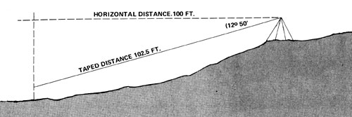

I've just read Aimee Gelwick's "Surveying for the Homestead" in MOTHER NO. 34 and would like to suggest some shortcuts for use when accuracy isn't essential.
Around here, do-it-yourself surveying-most of it pretty crude-is very common. Kentucky law allows any person to measure land and enter his findings on a deed. There's no need to hire a professional or to use standard instruments. In fact, to judge from the look of the average record, the fellow who did the work never even saw the property he was laying out . . . much less a compass. You'll often run across "official" boundaries that cross themselves or fail to close by thousands of feet.
Other states quite likely have higher standards for surveys to be placed on record. Be that as it may, you're perfectly free anywhere to locate the corners of a tract with the help of an old-timer and measure the land for your own purposes. And, believe it or not, you can do so quite easily-with very simple equipment-and still come up with reasonably accurate results. (A 10% error in acreage is acceptable under state law, but I like to keep the limit to 5%. My surveys generally check out to about that if I pace the distance up a steep mountain through briers, and to about 1% if I use a tape measure.)
OK. if you accept a 5% error in area, your distance measurements will automatically be off by 2-1/2% and your angles by 2° 50'. One practical result is that you won't need a transit . . . much too accurate (and expensive) a device for this kind of less-than-perfect work. You might as well forget the several hundred-dollar instrument and lay out angles with a Silva Ranger compass (No. 15T from Recreational Equipment, Inc., 1525 11th Avenue, Seattle, Washington 98122), which will cost you $19.30 and do the job just as efficiently. Accuracy to 1° is normal, and you can get error down to 1/2° with some care. Other advantages. The compass is nearly indestructible (no fancy carrying case is needed), fits into a pocket, and uses you for its tripod . . . a fact you'll appreciate after you've hauled a transit up a couple of ridges and through a blowdown.
Speaking of ridges, Aimee's Fig. 7 showed how to measure distances accurately on an incline with the aid of a plumb bob. This can also be done by taping the distance from top to bottom of the hill, determining the angle of slope, and figuring out the horizontal distance by means of trigonometry. Then again, given the tolerances I've set, you can duck the whole business most of the time. If you ignore a vertical angle of 12° 50', for example, you'll end up with a 2-1/2% error in distance-always on the long side-for that stretch of ground. This is acceptable for practical purposes . . . and in my neck of the woods you'll still be doing a lot better than the guy who carried out any previously existing survey of the property.
If you need to measure vertical angles, you can easily do so without a transit. An Abney level ($9.95 from Surplus Center, 1000-1015 West "V' Street, P.O. Box 82209, Lincoln, Nebraska 68501) will give you accuracy to 20' (10' if you're careful). There's also a Silva Ranger compass (No. 15 TCL with a clinometer, but in my opinion it's not worth the money.
Distances are best measured with a fiberglass tape. An alternative is a 100-foot steel tape (available from Sears for $11.39). Cloth measures, clotheslines, etc., are OK, but beware of stretchy fabrics and cords.
It's often accurate enough just to pace off a distance (and this has the added advantage of being a one-man show). My own pace is, conveniently, six to the pole . . . the word we hillbillies use instead of "rod" to mean 16-1/2 feet. We also replace chaining pins with pieces of flagging tape or rags tied to handy trees or fenceposts. One nice thing about these markers is that they're still there when we come back the following weak.
Be sure to keep the compass at least 5 feet from the steel tape when you're out in the field, and check other metal items (belt buckles, eyeglass frames, etc.) for their effect on the instrument. The influence of barbed wire or the like can be eliminated if both compass man and target man move two steps away from a fenceline.
I like to survey in short shots (that is, I take a new compass reading every 100 feet or less). This is a personal preference I developed when I mapped a large cave during my first year of "homesteading" . . . back before the word was recoined. In any case, it's a good idea to work in loops to increase your confidence or catch gross errors, and to plot your data with a protractor and rule. Acreage of irregular tracts is most conveniently determined by counting squares on graph paper.
To sum up: A Silva Ranger compass, Abney level, and hardware store tape measure will give me results that are accurate to 1% . . . good enough for any of my purposes. The compass alone-plus my two feet-are the only surveying instruments I really need, though, since I can live with a 5% error. If you don't demand absolute precision and would rather avoid the expense of buying or renting a lot of fancy equipment you may find my methods a useful alternative.
|
 |
|
|